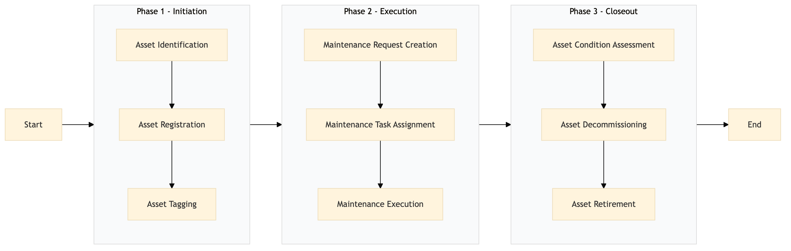

| Role | Steps |
|---|---|
| Facilities Manager | 1.1 1.2 1.3 2.2 3.1 3.2 3.3 |
| Executive Housekeeper | 2.1 |
| Maintenance Technician | 2.3 |
| Step | Name | Role | System | Input | Output | KPI | Dec? | Exc? | Pain Point / Risk |
|---|---|---|---|---|---|---|---|---|---|
| 1.1 | Asset Identification | Facilities Manager | Oracle OPERA Cloud | Purchase Order or Work Order | Asset Record in Oracle OPERA Cloud | Less than 5 minutes per asset | N | Y | Handling discrepancies between purchase orders and actual assets received. |
| 1.2 | Asset Registration | Facilities Manager | Oracle OPERA Cloud | Asset Record in Oracle OPERA Cloud | Registered Asset in Oracle OPERA Cloud | Less than 3 minutes per asset | N | Y | Ensuring all necessary fields are correctly populated. |
| 1.3 | Asset Tagging | Facilities Manager | Assa Abloy VingCard | Registered Asset in Oracle OPERA Cloud | Tagged Asset | Less than 2 minutes per asset | N | Y | Physical tagging errors leading to misidentification. |
| 2.1 | Maintenance Request Creation | Executive Housekeeper | Oracle OPERA Cloud | Work Order from Maintenance Log | Maintenance Request in Oracle OPERA Cloud | Less than 4 minutes per request | N | Y | Delays in creating work orders due to system downtime. |
| 2.2 | Maintenance Task Assignment | Facilities Manager | Oracle OPERA Cloud | Maintenance Request in Oracle OPERA Cloud | Assigned Maintenance Task in Oracle OPERA Cloud | Less than 2 minutes per task | N | Y | Overlooking critical tasks due to high volume. |
| 2.3 | Maintenance Execution | Maintenance Technician | Oracle OPERA Cloud | Assigned Maintenance Task in Oracle OPERA Cloud | Completed Maintenance Record in Oracle OPERA Cloud | Less than 15 minutes per task | N | Y | Inconsistent maintenance schedules affecting guest experience. |
| 3.1 | Asset Condition Assessment | Facilities Manager | Oracle OPERA Cloud | Completed Maintenance Record in Oracle OPERA Cloud | Updated Asset Condition Report in Oracle OPERA Cloud | Less than 5 minutes per asset | N | Y | Neglecting thorough condition checks leading to unexpected failures. |
| 3.2 | Asset Decommissioning | Facilities Manager | Oracle OPERA Cloud | Updated Asset Condition Report in Oracle OPERA Cloud | Decommissioned Asset Record in Oracle OPERA Cloud | Less than 3 minutes per asset | N | Y | Proper disposal procedures not followed, causing environmental issues. |
| 3.3 | Asset Retirement | Facilities Manager | Oracle OPERA Cloud | Decommissioned Asset Record in Oracle OPERA Cloud | Retired Asset Record in Oracle OPERA Cloud | Less than 2 minutes per asset | N | Y | Data integrity issues during retirement process. |
The process ensures accurate tracking and management of hotel assets throughout their lifecycle, from procurement to decommissioning.